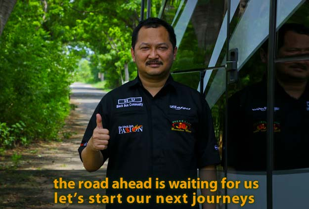

Sejarah
Awalnya tidak banyak yang mengira bahwa Bongkotan Jati Utama (BJU) adalah sebuah Akronim dari nama sebuah Perusahaan Otobus yang terkenal dengan fasilitas Wifi On The BUS nya, PO ini telah sukses mengukir Kota Jepara, Jawa Tengah. Bejeu? yaps.. PO yang identik dengan warna serba hitam ini adalah salah satu favorit dari sekian banyak PO besar lainnya bagi para penglaju ke Jakarta dari Jawa Tengah atau mereka yang bekerja di Jakarta dan kampungnya di Jepara, Semarang dan sekitarnya. Bejeu sendiri memiliki kisah yang unik dan menarik dari awal mula memasuki dunia transportasi hingga sukses seperti sekarang ini. Hitam adalah ciri khas dari Bus ini, orang biasa membacanya dengan kata BEJEU, namun kata "BEJEU" diambil dari sebuah akronim atau singkatan BJU yang jika dijabarkan ialah Bongkotan Jati Utama. Agar lebih enak dan mudah diucapkan ditambahkan dua huruf "e" dan menjadi lebih berkesan sebuah kata "kata Rifky, adik bungsu sang pendiri Bejeu." Namun ada juga orang yang mengartikan "bejo" yang dalam Bahasa Indonesia artinya mujur/untung. Mudah-mudahan bisnis keluarga saya bisa seperti itu, (ucapnya sambil tertawa lebar). Ternyata, sebelum merintis sebuah Perusahaan Otobus yang bernama BEJEU, beliau Bapak H. Rofi'udin, S.E telah memiliki sebuah bisnis menjual kayu-kayu jati hasil lelang, sejak tahun 1989 yang diberi nama Bongkotan Jati Utama (BJU). Karena ada ide untuk menambah perputaran dana usahanya, dari sinilah muncul sosok bus gagah dengan warna hitam mengkilatnya yang membuat bus ini terkesan mewah, beliau H. Rofi'udin, sang pemilik sekaligus pendiri. Ia membeli sebuah armada Isuzu Bison yang kemudian disusul dengan Bus besar hasil lelang dari Big Bird di Jakarta tahun 2003. PO. Bejeu yang awalnya hanya melayani charter armada saja, saat ini sudah hadir untuk meramaikan pasar AKAP (Antar Kota Antar Provinsi) pada awalnya khusus jaluur Jepara - Jakarta sejak tahun 2007. Itu pula masih terbatas hanya untuk jurusan Pulogadung. Namun seiring berjalannya waktu PO. Bejeu sukses membuka trayek ke hampir seluruh wilayah Jakarta, Bandung dan Bogor.
- >
-
Visi
Perusahaan akan selalu memprioritaskan pelayanan dan aktifitas bisnis yang terpadu dan terprogram untuk memberikan hasil optimal dan kepuasan pelanggan dengan menjalin hubungan baik dan memberikan pelayanan yang terbaik kepada para pelanggan. BEJEU adalah perusahaan transportasi profesional yang tumbuh kuat dan membawa arti bagi Masyarakat.
- >
-
Misi
Menjadi sebuah perusahaan transportasi publik yang AMAN, NYAMAN, dan PEDULI pada PELANGGAN. Berperan serta dalam menciptakan lapangan pekerjaan dan turut serta membangun budaya kerja yang berkualitas dan profesonal demi terciptanya pelayanan transportasi terbaik. Mempersiapkan segala perangkat kebutuhan perusahaan dan ikut meningkatkan perkembangan dunia transportasi di Indonesia.
Testimoni
Pelayanan awak Busnya baik, dan ramah kebetulan saya naik armada Executif dengan nomor lambung B30, rute Cibinong – Semarang.
Helmy
Perjalanan saat itu cukup nyaman bagi saya, kerjasama dari pihak Kru dan penumpang juga sangat baik, semoga Bejeu tambah jaya kedepannya.
Zakaria
Saya selalu naik bus Bejeu kalo perjalanan dari Bogor ke Jepara untuk bus dan pelayanannya bagus, terjamin deh kenyamanannya...
Faturrohman